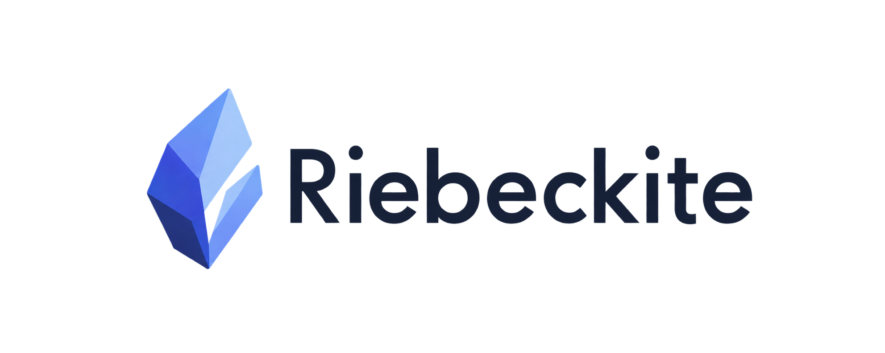

いつもの道具
TypeScript、JSX、HonoX、npm。独自のテンプレート言語を覚える必要はない。

ObsidianノートとMarkdownを、TypeScriptとHonoXで
自由に組み立てる静的サイトフレームワーク。
Markdownを書けばサイトになる。その基本はよくできていた。問題は、その先にあった。
Riebeckiteは、ObsidianノートやMarkdownを静的サイトとして公開するためのフレームワークです。生成されるのは、@riebeckite/* を依存に持つ普通のHonoXアプリケーションです。
TypeScript、JSX、HonoX、npm。独自のテンプレート言語を覚える必要はない。
フォルダでも、既存のVaultでも、別リポジトリでも。content.directoryで指定する。
PluginもThemeも普通のnpmパッケージ。公式に72のPluginと6のThemeがある。
フレームワークの形を決めているのは、機能の数ではなく境界の引き方です。
CoreはHonoX、Vite、Cloudflare、特定のPluginを知らない。
ページ、URL、リンク、アセットはビルド時に解決する。Markdownはアーキテクチャの中心ではない。
JavaScriptがなくても本文が読める。動きは必要な場所だけに足す。
ファイルパスからURLを再計算しない。解決済みのpermalinkだけを公開URLとして使う。
迷ったら、その機能を成立させるために必要な、最も内側のpackageに置く。
ApplicationはIntegrationへ、Integration・Plugin・ThemeはCoreへ依存する。
CLIはIntegrationとCoreを使う。Coreから外側への依存は作らない。
routes · components · islands · site shell
HonoX · Vite · Cloudflare · platform connection
config · content · pipeline · plugin runtime
framework非依存のPage contract
Pageを提供する
Pageをrouteに接続する
最終的なdocumentを描画する
ContentSourceが「どこから読むか」、ContentManagerが「どう扱うか」を担当する。
ファイル、Vault、別リポジトリ。保存場所を抽象化する。
どこから読むか公開URLを解決し、Pluginを通してコンテンツを処理する。
どう扱うかサイト全体の事実をひとつのmanifestにまとめる。
何が公開されるか静的HTMLと、必要なブラウザコードを出力する。
どう届けるかcontent/posts/hello.md
posts/hello
/blog/hello/
source of truth
ファイルパスからURLを推測しない。Pluginやconfigが解決したpermalinkだけを使う。
PluginはMarkdownの変換だけでなく、ページ、コンポーネント、CSS、ブラウザコード、HTTPエンドポイント、生成ファイルまで追加できる。
| 領域 | 公式Pluginの例 |
|---|---|
| Markdown | obsidian-markdown · properties · citations · shortcodes |
| 図表 | mermaid · plantuml · d2 · graphviz · wavedrom · chartjs |
| 発見 | search · backlinks · local-graph · toc · query · bases |
| 執筆 | code-enhance · diff · flashcards · kanban · marp |
| 公開 | seo · webmention · share · l10n · deploy · analytics |
Pluginは機能、Themeは見た目。どちらもCoreが公開しているcontractだけを使う。
definePlugin()に、必要な拡張ポイントだけを渡す。サイト内のファイルでも、npmパッケージでも同じ仕組み。
import { definePlugin } from "@riebeckite/core";
export function localPlugin() {
return definePlugin({
name: "local",
assets: [
{
pluginName: "local",
kind: "style",
moduleSpecifier: "/extensions/plugin.css",
},
],
});
}nameだけでもPluginになる。必要になった拡張ポイントを、ひとつずつ足していく。
配布しないなら、extensions/local-plugin.ts に置くだけでよい。packageにするのは、他のサイトでも使うときだけ。
前回の結果を使い、変更された部分だけを処理する。stateが使えなければ、最初からやり直せばいい。
configを解決し、依存関係を検証する。
Plugin hooksを通してMarkdownを処理する。
サイト全体のmanifestとcontent graphを作る。
静的HTMLと、必要なislandsを生成する。
CLI · Doctor · Inspector · cache · profile
生成済みアプリと安定したcontent dataだけ。Workersはstateを読まない。
高速化のためのstateがなくても、同じサイトを正しく生成できる。これを前提にしている。
サーバー描画を基準に、ブラウザ側だけを強化する。置き換えるのはページのルートで、HTML文書全体ではない。
main#main-content
replaced
通常のリンク遷移を、fetchに置き換える。
後始末をしてから、メタデータを差し替える。
シェルは残したまま、ページのルートだけを更新する。
最後にページスコープをmountし、navigationイベントを発火する。
spa: { prefetch: "hover", viewTransitions: true } で、先読みと画面遷移を有効にできる。
雛形の生成からデプロイまで、CLIで完結する。
# 雛形を生成 $ npx create-riebeckite # 依存を入れて、開発サーバーを起動 $ cd my-site $ npm install $ npm exec riebeckite dev # 静的サイトを dist/ へ $ npm exec riebeckite build
| dev | 開発サーバーを起動する |
| check | 設定とPluginを検証する |
| doctor | 環境、content、output、Themeを診断する（--fix） |
| inspect | config、plugins、content、graph、buildの解決結果を見る |
| build | 静的サイトを生成する（--fullで全処理） |
| deploy | Cloudflare Workersへ公開する |
プリセットは starter / showcase / minimal / empty。--list-presets で一覧できる。
pnpm workspaceのmonorepo。内側のpackageは、外側の実装を知らない。
riebeckite/ ├─ packages/ │ ├─ core/ config · content · pipeline · plugin runtime │ ├─ cli/ create · dev · check · build · deploy │ ├─ integrations/ honox · analytics · webmention │ ├─ plugins/ 72 official plugins │ ├─ themes/ default · minimal · gruvbox · ... │ └─ create-riebeckite/ site generator ├─ apps/web/ 公式サイト / 参照アプリ ├─ docs/ ドキュメントの原本 ├─ templates/ デプロイ用テンプレート └─ riebeckite.config.ts サイト設定
Riebeckiteが向くのは、サイトを自分のプロダクトとして持ちたい人。
表示だけなら、ホスティング型のサービスで足りる。サイトの構造まで自分で決めたいなら、ここから始める。
Obsidianで書き、TypeScriptで組み、自分のタイミングで公開する。
npx create-riebeckite